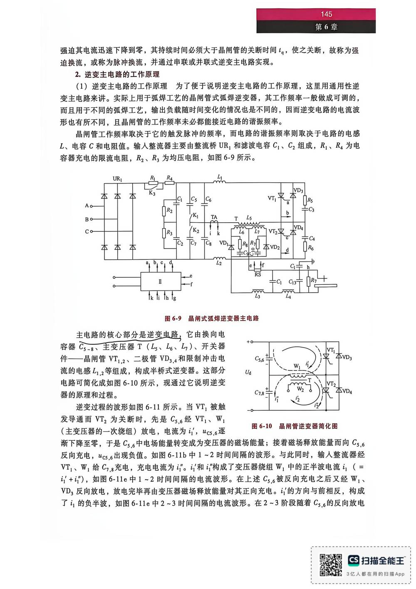

13 手写笔记/6~8周/h-w2-041 2.逆变主电路工作原理
h-w2-041 2.逆变主电路工作原理
📷 原图：
6~8周 焊接电源(差最后一节课)(1).pdf第 41 页（整页扫描，本库内嵌h-w2-041.jpg）
2.逆变主电路工作原理

本页文字（OCR 整理）
- 强迫其电流迅速下降到零，其持续时间必须大于晶闸管的关断时间tg，使之关断，故称为强
- 迫换流，或称为脉冲换流，并通过申联或并联式逆变主电路实现。
- 2.逆变主电路工作原理
- （1）逆变主电路的工作原理为了便于说明逆变主电路的工作原理，这里用通用性逆
- 变主电路来讲。实际上用于弧焊工艺的晶闸管式弧焊逆变器，其工作频率一般做成可调，
- 而且用于不同的弧焊工艺，输出负载随时间变化的情况也是不同的，因而逆变电路的电流波
- 形也有所不同，且晶闸管的工作频率未必都能接近电路谐振频率。
- 晶闸管工作频率取决于它的触发脉冲的频率，而电路请振频率则取决于电路的电感
- L、电容C和电阻值。输人整流器主要由整流桥UR，和滤波电容C」、Gz组成，R、R为电
- 容器充电的限流电阻，及z、R，为均压电阻，如图6-9所示。
- 图6-9晶闸式弧焊逆变器主电路
- 主电路核心部分是逆变电路，它由换向电
- 容器Cs~8、主变压器T（Ls、L、L）、开关器
- 品闸管VT」2、二极管VD3,4和限制冲击电
- 流的电感L」，2等组成，构成半桥式逆变器。这部分
- 电路可简化成如图6-10所示，现通过它说明逆变
- 器的原理和过程。
- 逆变过程波形如图6-11所示。当VT」被触
- 发导通而VTz为关断时，先是CS,6经VTI、W」
- 晶闸管逆变嚣简化图
- （主变压一次绕组）放电，电流为引，“cs,6逐
- 渐下降至零，于是Cs.6中电场能量转变成为变压的磁场能量；接看磁场释放能量而向Cs,6
- 反向充电，Wcs,6出现负值。如图6-11b中1～2时间间隔的波形。与此同时，输人整流器经
- VT」、W」给G7,8充电，充电电流为“”。订和讠”构成了变压器绕组W，中的正半波电流云（=
- 引+训），如图6-11e中1~2时间间隔的电流波形。在上达Cs，。被反向充电之后又经W」、
- VD；反向放电，放电完毕再由变压器磁场释放能量对其正向充电。引方向与前相反，构成
- 了i负半波，如图6-11e中2~3时间间隔电流波形。在2～3阶段随着Cs，反向放电
本页重点（自动标记：含"定义/特点/要求/结论/公式"等，或与课件原句高度一致）
- 强迫其电流迅速下降到零，其持续时间必须大于晶闸管的关断时间tg，使之关断，故称为强
- 2.逆变主电路工作原理
- （1）逆变主电路的工作原理为了便于说明逆变主电路的工作原理，这里用通用性逆
- L、电容C和电阻值。输人整流器主要由整流桥UR，和滤波电容C」、Gz组成，R、R为电
- 流的电感L」，2等组成，构成半桥式逆变器。这部分
OCR 说明
文字由 macOS Vision 识别手写体/翻拍页面得到，错字难免（如"弧"误识为"孤"）；重点标记据此推断，请以页图为准。
关联
- ← 上一页 · 总览 · 下一页 →
- 讲义：00 第6章 逆变式 导航 · 概念：04 概念地图